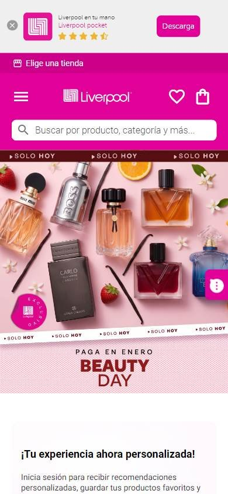
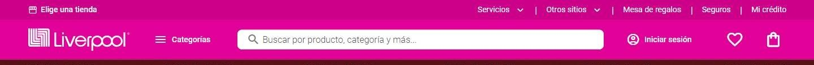
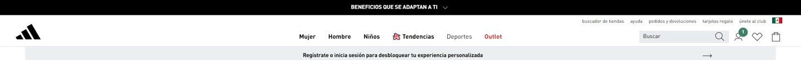
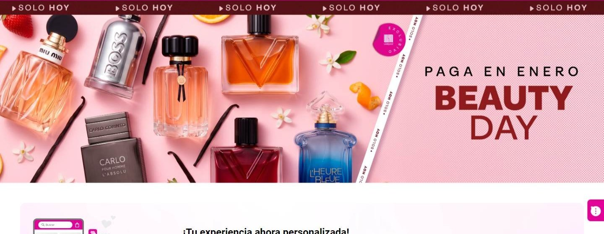
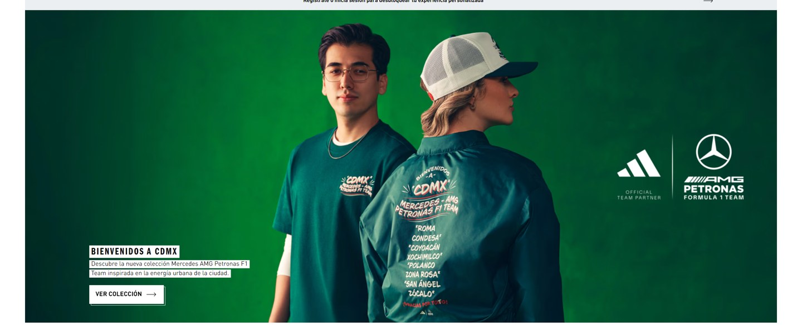

Tienda online que compite por calidad o marca
Los seleccionados
Los dos sitios más visitados que compiten de esta forma, según estadísticas de tráfico.
En resumen: lo que hacen los líderes
La pantalla de inicio de cada uno

Estilo visual
Colores, imágenes, tipografía y cuánta información muestran.
Tu estilo visual debería…
- Si sos tienda departamental, tu color de marca en el header; si sos marca, blanco y negro y fotos enormes.
Lo que tienen en común: La tienda departamental usa su color de marca fuerte; la marca deportiva, blanco y negro con fotos enormes.
La paleta de cada uno
Medida sobre la primera pantalla. Los colores de marca salen del header; el resto muestra cuánto espacio ocupa cada color.
Así lo resuelve cada uno
Ficha comparativa
| Aspecto | Liverpool | Adidas México |
|---|---|---|
| Paleta | Acotada: rosa de marca + blanco | Muy acotada: blanco y negro |
| Imágenes | Fotos de producto en banner | Foto de campaña enorme |
| Densidad | Media | Baja |
Header
La franja de arriba con el logo y los accesos.
Tu header debería…
- Buscador ancho si vendés muchas marcas; chico si vendés una sola.
Lo que tienen en común: Logo a la izquierda y cuenta con bolsa a la derecha; el buscador es protagonista solo en la tienda departamental.
Así lo resuelve cada uno


Ficha comparativa
| Aspecto | Liverpool | Adidas México |
|---|---|---|
| Fondo | Rosa de marca | Blanco |
| Logo | A la izquierda | Ícono, a la izquierda |
| Buscador | Ancho, en el centro | Chico, a la derecha |
| A la derecha | «Iniciar sesión», favoritos y bolsa | Cuenta, favoritos y bolsa |
Primera pantalla
Lo primero que se ve debajo del header.
Tu primera pantalla debería…
- Banner de campaña y, si hay promo, una franja de urgencia.
Lo que tienen en común: Banner de campaña con márgenes; la tienda departamental suma urgencia («Solo hoy»).
Así lo resuelve cada uno


Ficha comparativa
| Aspecto | Liverpool | Adidas México |
|---|---|---|
| Formato | Banner de campaña con márgenes y franja «Solo hoy» | Foto de campaña con márgenes |
| Botón | — | «Ver colección» con borde |